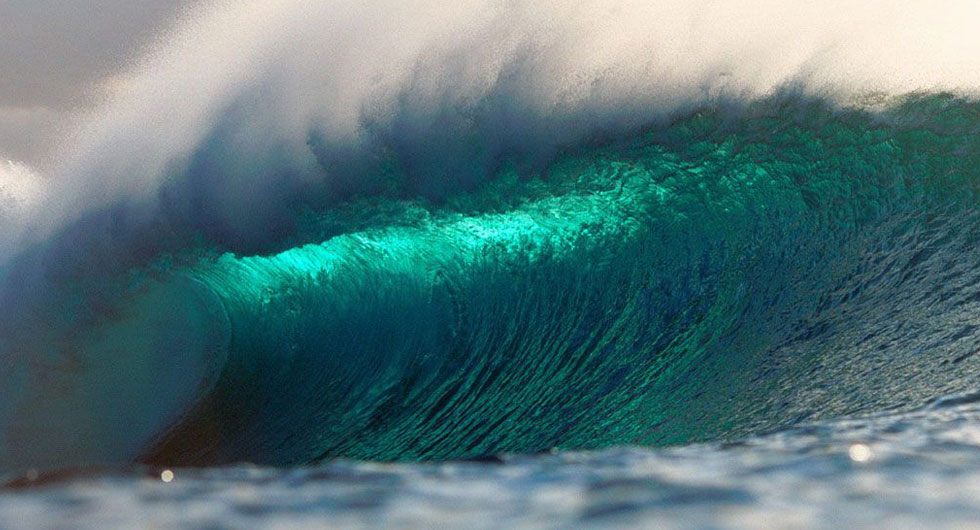
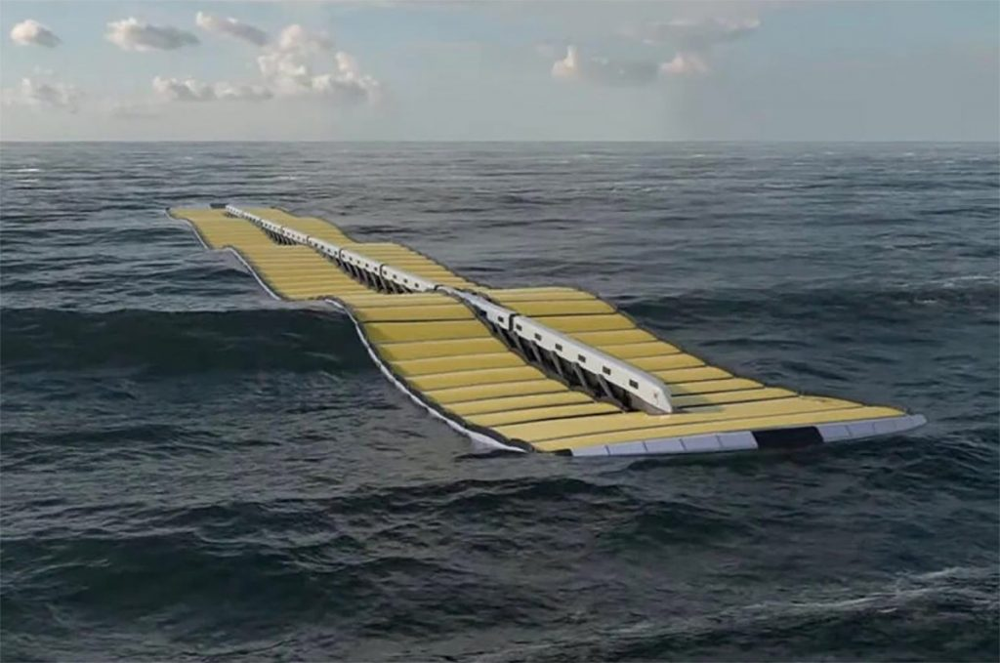

As ondas são provenientes da interação do vento com a superfície do mar. Parte da energia cinética do vento é atribuída para a água devido ao atrito entre essas duas superfícies, formando as ondas.
Essas ondas detêm capacidade de percorrer longas distâncias com pouca perda de energia.
Os dispositivos de conversão de energia das ondas são classificados conforme a distância da costa em que são instalados, ou seja,
na profundidade em que operam. Eles são classificados em três tipos:
Mecanismos costeiros (shoreline);
Mecanismos pertos da costa (nearshore);
Mecanismos longes da costa (offshore).

Formas de captar a Energia das Ondas
Absorvedores flutuantes: são boias gigantes constituídas por turbinas.
Atenuadores: São dispositivos extensos e segmentados, conectados às bombas hidráulicas.
Terminais: são torres instaladas na costa marítima. Em cada torre, há uma turbina.
Dispositivos overtopping: São caixas enormes, como balsas, que flutuam no mar.
A utilização da energia das ondas apresenta diversas vantagens, tais como:
Fonte abundante pois os oceanos cobrem mais de 70% da superfície terrestre;
Energia limpa e inesgotável;
Disponibilidade constante: A energia das ondas está disponível 24 horas por dia
Alta densidade energética;
Potencial em áreas costeiras.

No entanto, também é importante considerar os impactos negativos associados à energia das ondas, tais como:
Ruído e impacto na vida marinha: Dependendo dos dispositivos utilizados, a geração de energia das ondas pode gerar ruídos que podem afetar a vida marinha.
O funcionamento desses dispositivos pode causar impactos na ecologia local e nos ecossistemas marinhos;
Impacto visual na paisagem costeira, afetando a estética e a experiência visual dos locais;
Alterações na dinâmica oceânica.